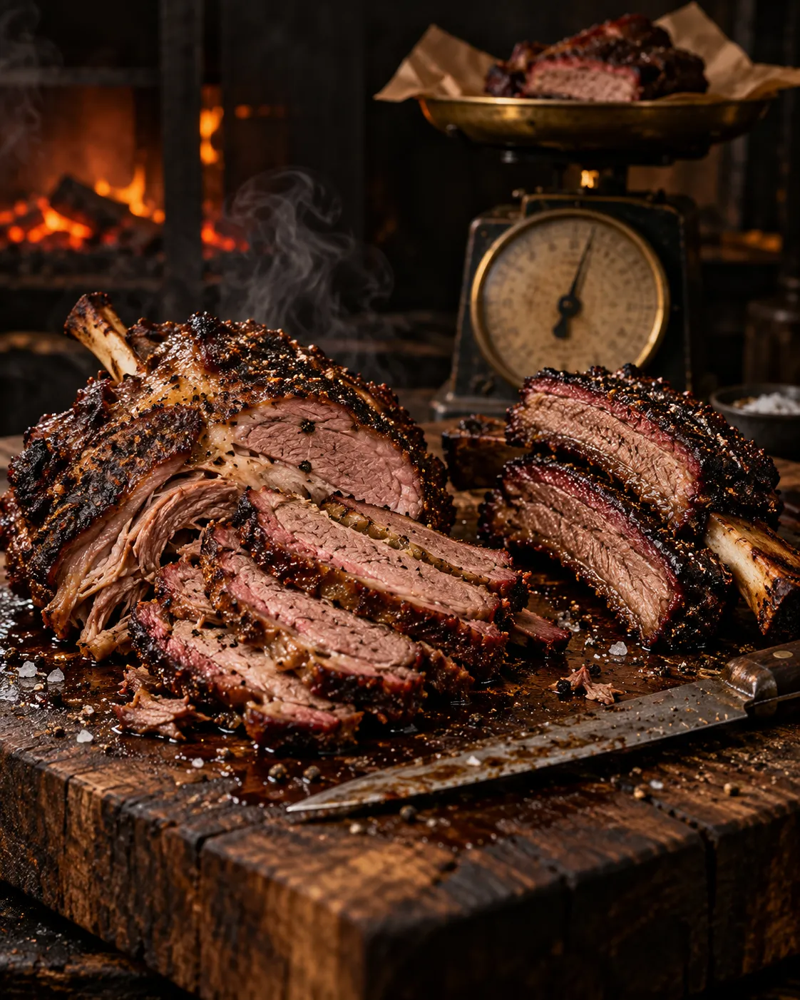
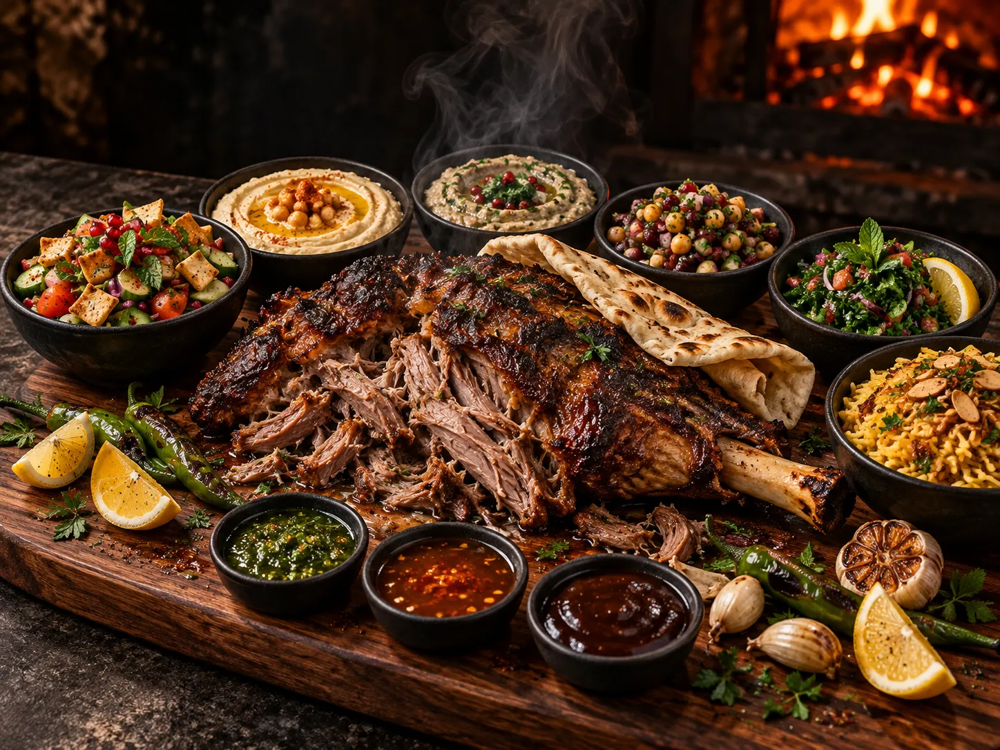

10 à 12 h de fumage
Cuisson à basse température pour une viande qui fond.


Berges du Lac 2 · Tunis
Agneau et bœuf fumés lentement pendant des heures, servis au poids avec des accompagnements à volonté. Berges du Lac 2, Tunis.
Notre savoir-faire
Cuisson à basse température pour une viande qui fond.

Cinq salades et riz avec la viande choisie.

Pour relever chaque morceau à votre goût.

Réservez par téléphone ou sur WhatsApp, pour deux ou pour toute la famille.
Regency 3, Cité Les Pins, Les Berges du Lac 2, Tunis (derrière l'hôtel Novotel, côté lac)
Tous les jours, de 12 h à minuit